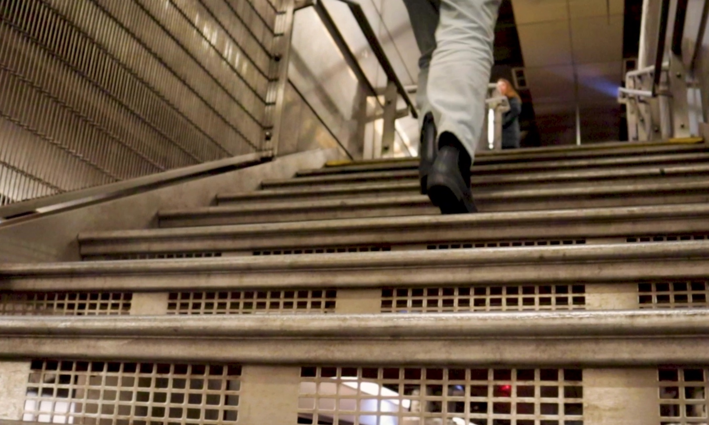
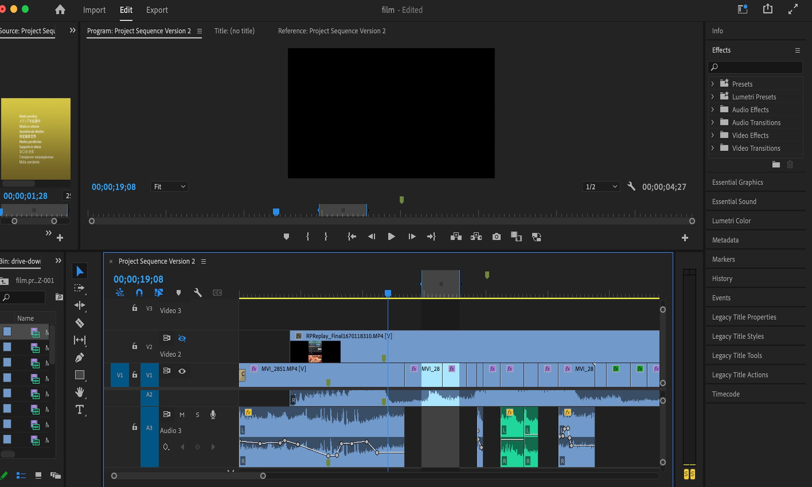

Running Late for School

Different types of Shot
I created a short film using different ways of shooting from different angles. All of the angles allow for a variety of expressions, and I used them to create an interesting and different film by using them in different ways in a short film.

Music
I used the Rossini： William tell overture: final , which is classical music. It is a famous song that everyone has heard at least once somewhere. This song is very high-tempo and rhythmical, so by combining it with the constantly running woman in my film, I think I was able to express something unique and interesting, like a Chaplin movie.

Editing Film
Edit the film using Adobe Premiere.